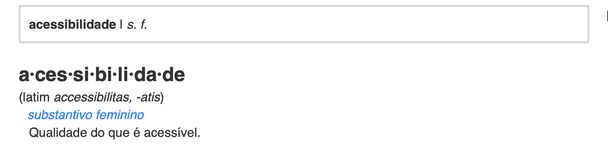
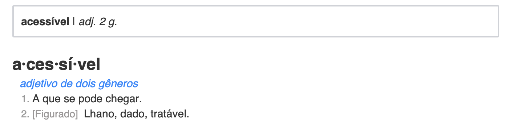

Acessibilidade na interação humano-computador
Autor: Erick Giffoni
O que é acessibilidade ? Uma definição do Dicionário Priberam

Ok... e o que é acessível ?

Hmmmm... e como isso se aplica na interação humano-computador ?
Percebe-se que acessibilidade é uma qualidade, ou seja, é um atributo, uma característica do que é acessível, ou seja, daquilo a que se pode chegar. Assim, para IHC, acessibilidade está relacionado à facilidade de uso, à usabilidade do site e à experiência de todo e de qualquer usuário. O website, nesse contexto, deve atender à um conjunto de princípios ou de normas para que deficiências de visão, ou de coordenação motora, ou de audição, ou qualquer outra não sejam um empecilho para que o usuário consiga navegar no site.
Objetivos da avaliação de acessibilidade
-
Pontuar os acertos do Codeforces em relação à acessibilidade ;
-
Encontrar os pontos negativos (as falhas) do Codeforces em relação à acessibilidade ;
-
Consolidar os resultados encontrados para propor melhorias ao Codeforces.
Sobre o padrão eMAG
O Modelo de Acessibilidade em Governo Eletrônico (eMAG) consiste em um conjunto de recomendações a ser considerado para que o processo de acessibilidade dos sítios e portais do governo brasileiro seja conduzido de forma padronizada e de fácil implementação.
Adaptado de [2]
Na última década, a expansão prodigiosa da Internet vem revolucionando as formas de comunicação, de acesso à informação e de realização de negócios em todo o mundo. Mas a que se deve este fenômeno? Basicamente, deve-se ao seu potencial para atingir instantaneamente um grande número de pessoas, independentemente de localização geográfica e de contexto sócio-cultural.
Neste contexto, a inacessibilidade de sítios eletrônicos exclui uma parcela significativa da população brasileira do acesso às informações veiculadas na internet. O governo brasileiro - tendo em vista suas atribuições - não pode aceitar tal situação na entrega de informações e serviços sob sua responsabilidade.
O Modelo de Acessibilidade em Governo Eletrônico (eMAG) tem o compromisso de ser o norteador no desenvolvimento e a adaptação de conteúdos digitais do governo federal, garantindo o acesso a todos.
As recomendações do eMAG permitem que a implementação da acessibilidade digital seja conduzida de forma padronizada, de fácil implementação, coerente com as necessidades brasileiras e em conformidade com os padrões internacionais.
É importante ressaltar que o eMAG trata de uma versão especializada do documento internacional WCAG (Web Content Accessibility Guidelines: Recomendações de Acessibilidade para Conteúdo Web) voltado para o governo brasileiro, porém o eMAG não exclui qualquer boa prática de acessibilidade do WCAG.
Adaptado de [1]
Avaliação do Codeforces usando a ferramenta ASES [5]

A tabela a seguir apresenta os erros encontrados na página inicial do Codeforces e serve como relatório de investigação para propor as melhorias :
| Recomendações do eMAG | Tipo do erro | Quantidade de ocorrências |
|---|---|---|
| Marcação | - 1.1 Respeitar os Padrões Web- 1.2 Organizar o código HTML de forma lógica e semântica- 1.3 Utilizar corretamente os níveis de cabeçalho- 1.5 Fornecer âncoras para ir direto a um bloco de conteúdo | - 140- 1- 1- 1Total = 143 |
| Comportamento | - 2.2 Garantir que os objetos programáveis sejam acessíveis | - 1Total = 1 |
| Conteúdo/Informação | - 3.5 Descrever links clara e sucintamente- 3.6 Fornecer alternativa em texto para as imagens do sítio- 3.10 Associar células de dados às células de cabeçalho | - 4- 111- 5Total = 120 |
| Apresentação/Design | - 4.4 Possibilitar que o elemento com foco seja visualmente evidente | - 1Total = 1 |
| Formulários | - 6.2 Associar etiquetas aos seus campos | - 2Total = 2 |
Clique aqui para ver a avaliação completa.
Referências
[1] eMAG - Modelo de Acessibilidade em Governo Eletrônico
[2] Modelo de Acessibilidade (eMAG)
[3] e-MAG - Governo Digital [PDF]
[4] eMAG Desenvolvedor [PDF]
[5] ASES - Avaliador e Simulador de Acessibilidade em Sítios
Versionamento de edições desta página
| Data | Autor | Descrição | Versão |
|---|---|---|---|
| 13/11/2019 | Erick Giffoni | Criação da página e adição das referências | 0.1 |
| 13/11/2019 | Erick Giffoni | Adição da avaliação inicial | 0.2 |
| 16/11/2019 | Erick Giffoni | Adição dos objetivos da avaliação de acessibilidade | 0.3 |
| 16/11/2019 | Erick Giffoni | Finalização da avaliação em conformidade eMAG | 1.0 |